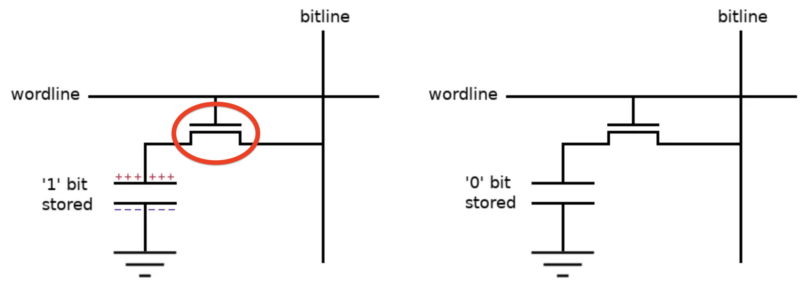

An Intro to DRAM
This is part of a series on topics I found fascinating while reading Ulrich Drepper’s “What Every Programmer Should Know About Memory”. I felt the original text’s coverage of DRAM architecture lacked visuals and a clear description of the hierarchy - from DIMMs and banks, down to memory arrays, rows, columns, and individual transistors. This post aims to supplement that and cement my own understanding.
Types of RAM, and what is DRAM
There are two main types of RAM in modern computers: SRAM and DRAM. DRAM stores each bit as a charge on a capacitor. Since capacitors leak, the charge must be refreshed every 64ms or the data is lost - hence “dynamic.” SRAM instead uses a 6-transistor flip-flop that holds state as long as power is supplied, needing no refresh. The tradeoff is density: a DRAM cell is just 1 transistor + 1 capacitor, making it far cheaper and more compact. This is why DRAM is used for main memory (gigabytes) while SRAM is reserved for CPU caches (L1/L2/L3) and TLBs where speed matters more than size.
Brief: What is a transistor, and how does it work in a DRAM Cell?
We can think of a transistor as a voltage-controlled gate. It has three terminals - gate, source, and drain. Apply sufficient voltage to the gate, and a channel forms between source and drain, allowing current to flow. Remove that voltage, and the channel closes.
In a DRAM cell, the three terminals map to specific roles:

- Wordline connects to the gate. It is purely a control signal - it never carries data, it just says “open” or “closed”.
- Bitline connects to the drain. It is the data path - when the transistor is open, this is what the capacitor communicates through.
- Capacitor connects to the source. It may or may not hold charge, representing a 1 or 0.
When the wordline goes high, the gate opens and charge can flow.
On a read, charge flows from the capacitor to the bitline. On a write, the opposite happens. The wordline decides whether data flows.
Because the cell capacitor is tiny relative to the bitline, the charge it dumps only shifts the bitline voltage by ~100mV. A sense amplifier at the end of the bitline detects this small deviation and snaps it to a full 0 or Vdd. Note: The read partially drains the capacitor, so the sense amp also rewrites the data back.
Note: “wordline” is a hardware term for the wire that controls a row of transistors — it has no relation to “word” in the computer architecture sense (e.g. 32-bit or 64-bit word size).
How is DRAM Organised: The 2D Array
Why a 1D Array doesn’t work
Let’s think of implementing DRAM with N cells is a 1D layout: 1 wordline is connected to all N cells, with N bitlines (one per cell) and N sense amplifiers at the end of each bitline. To read a specific cell, you assert the wordline and read the corresponding bitline.
The problem is the wiring - N bitlines and N sense amplifiers running the full length of the chip. For a modest 256MB chip (2 billion cells), that’s 2 billion bitlines and 2 billion sense amplifiers.

The solution is a 2D grid. Cells are arranged in rows and columns. To address any single cell, you only need to specify two coordinates: which row, and which column. A memory array (mat) is exactly this: a rectangular grid of cells where all cells in a row share a wordline, and all cells in a column share a bitline.

For the 256 MB example (N = 2^31 bits): a 1D layout needs 31 address pins; a 2D layout needs only ~16. The total information is the same — the saving comes from sending the row address first (RAS) and the column address second (CAS) over the same wires.
The Read/Write Cycle
This is a DRAM read timing diagram. Row and column addresses share the same pins, multiplexed in time - RAS falling latches the row address (triggering row activation), then CAS falling latches the column address (selecting which sense amp output to forward). Data appears shortly after CAS falls.

How is DRAM Organised: The Bank
A bank is a set of these 2D arrays that are activated together. The number of memory arrays per bank equals its bank output width — how many bits the bank outputs per access. All arrays fire in parallel to produce the full output word simultaneously.

The row decoder asserts a wordline, opening every cell in that row and dumping their charge onto the bitlines.
The sense amp helps to latch to 0 or 1, and the column decoder then selects which of the now-latched sense amp outputs to route to the data buffers, which hold the selected bits and drive them out to the I/O pins.
How is DRAM Organised: DRAM Chip, Rank and DIMM
Zooming out from the array: Setup: 8 x8 DRAM chips on 1 side of a DIMM, each forming a single rank. Each chip contains
- DRAM chip: One physical IC containing multiple banks. All banks receive the same row and column address simultaneously, each contributing 8 bits to the output.
Red: Array; Green: Bank

-
Rank: Multiple DRAM chips wired in parallel, presenting a bus to the memory controller. All chips receive the same row and column address simultaneously - each holds different data at that location. Chip 0 outputs bits 0–7, chip 1 outputs bits 8–15, and so on; their outputs are concatenated to form the full 64-bit bus word (8 x8 chips × 8 bits = 64 bits). The parallelism is in width, not in accessing different locations. Note: the rank’s bus width (64-bit for DDR) has no direct correspondence to the CPU’s architectural word size (32-bit vs 64-bit) — it’s a convention set by the memory controller and DDR standard.

-
DIMM: The physical stick of RAM. Can contain one or two ranks.

The full hierarchy is: cell → row/column → memory array → bank → rank → DIMM.
Burst Mode and Bank Interleaving
Burst mode
A read begins with RAS (row address) followed by CAS (column address). The row is activated and latched into the sense amplifiers — the slow part. Once the row is open, consecutive columns can be read out on every clock cycle without issuing new addresses. The DRAM auto-increments the column address internally. The number of columns read in one go is the burst length.
Across the rank, all 8 chips do this in lockstep, each delivering 8 bits per cycle — 64 bits total per beat. With burst length 8: 8 beats × 64 bits = 512 bits = 64 bytes, exactly one cache line.

Bank interleaving
Each bank within a chip operates independently. While one bank is in the slow row-activation phase (tRCD), another bank — already with its row open — can be serving a CAS. By interleaving accesses across banks, the memory controller hides the row activation latency and keeps the data bus busy.
Example: Storing a Vector of 8 Ints
Setup: single rank of 8 x8 chips. int vec[8] = 8 × 4 bytes = 32 bytes, stored at some aligned address.
The controller issues a burst write. Each beat delivers 64 bits (8 bytes) across the rank — chip 0 takes bits 0–7, chip 1 takes bits 8–15, …, chip 7 takes bits 56–63. So:
- Beat 1:
vec[0]andvec[1](8 bytes) — spread across all 8 chips, 1 byte per chip. - Beat 2:
vec[2]andvec[3]— same, next column address. - Beat 3:
vec[4]andvec[5]. - Beat 4:
vec[6]andvec[7].
4 beats × 64 bits = 256 bits = 32 bytes. No single integer lives entirely in one chip — vec[0]’s 32 bits are split across 4 chips (8 bits each). The controller reassembles them on a read.
All 4 beats share the same open row (same RAS), just incrementing the column address each beat — a burst length of 4. The entire vector is fetched with one row activation and one column address, the rest streamed automatically.
Note that 32 bytes is half a cache line (64 bytes). In practice the CPU would fetch the full 64-byte cache line (burst length 8), pulling in whatever sits adjacent in memory alongside the vector.
Resources